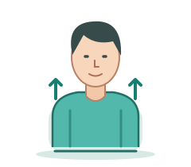

动作示意
颈肩放松
坐稳，轻轻做
示意幅度不作训练目标
轻柔、慢一点。不舒服就停下。
练多少？要注意什么？
次数以医护交代的为准，不自行加量。
- 不用手扳头，不绕圈，不自行做抗阻训练。
甲状腺术后 · 颈肩训练
看得懂，跟着做。

只做医护允许的动作和次数 · 当前无医护在线值守
每次练习前，回答5个问题。
先看示意，再按医护交代的要求练。
先完成练前确认，再开始练习。
坐稳，轻轻做
轻柔、慢一点。不舒服就停下。
次数以医护交代的为准，不自行加量。
只在这台设备处理，不会发送到医院。
还没有选择视频
先选动作和视频，再分析。提示需医护复核。
只看低头、转头、侧屈时的肩膀和身体变化。
未经临床验证，不能判断动作合格或安全。
首次先点“准备AI”，再开始分析。
不评估头颈角度、其他动作、吞咽、疼痛或切口。多人入镜、画面不清或参考姿势不稳时无法判断；未提示异常也不代表动作合格或安全。
临床依据：甲状腺术后康复研究支持开展经许可的训练；轻柔活动、疼痛时寻求专业建议等原则见公开患者教育。这些证据并未验证本算法或本系统的纠错疗效。
技术：MediaPipe Pose Landmarker 1.2.0 在设备上识别人体关键点，再与本人前两秒的参考画面比较。只看相对投影变化，不测临床颈椎活动度、不认定“转体”或“抬肩”的原因。固定镜头仍不能完全排除视角和模型误差。
工程触发参数：可见度 ≥0.70、有效帧比例 ≥70%、至少12个有效帧；参考帧至少4帧。投影肩线/躯干方向变化超过8°、双肩投影宽度变化超过25%或归一化位置变化超过0.18，且连续至少3个采样帧，才标出回看片段。参考姿势稳定性参数为5°。以上是探索性工程设置，并非文献或指南给出的临床阈值，不用于评价患者。
没有触发提示也不等于安全或动作合格。当前不识别颈部前屈角、转头角、呼吸、吞咽；转头时的肩部投影变化可能来自视角，需人工复核。首次需下载模型约6 MB及计算组件约14 MB（设备可能使用不同组件），之后可复用浏览器缓存。视频帧仅在本设备处理，不上传。视频模式逐帧分析保留每秒3帧采样和原有触发规则；未完成或超时不生成判断。
点问题看建议，也可以点喇叭听。
方便回顾，或给医护看。
本次AI回看结果也会写入下载文件。
只作记录，无人在线查看；不舒服请先联系医护。勿填姓名、电话。
只下载到本设备，不会自动发送。